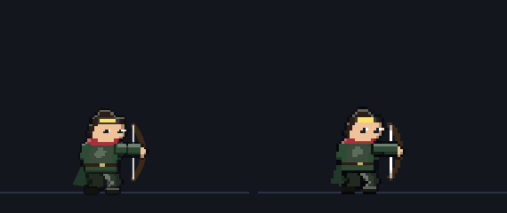

레인저 계열 통짜 시트 — 0회 준비
스펙 docs/specs/legacy-class-sheets.md · 레인저 · 저격수 · 마궁수 · 석궁사수 · 신궁 · 차원궁사 · 공성포수 · 2026-10-15
지금 상태: PixelLab 0회 (보류 — 검사 계열 시범 승인 뒤 계획서 재승인). 생성 없이 할 수 있는 준비만 했다.
- 2차 포함 7종 기준 그림: 지금 게임의 대기 자세를 8배로 찍어 1배 도트로 줄였다. 칸 96(공성포수 128), 발 기준점 고정, 화살·석궁 살은 빼고 찍었다.
SHEET_ON에 7종 줄을 넣었다 (모두false— 시트가 승인되면 켠다). 주소?sheets=0이면 전부 꺼진다.- 동작 키 매핑: 하늘로 겨눈 스킬 자세(
bowA ≤ -0.55)는castUp줄로 가게 공용sheetFrame에 한 줄 더했다 (줄이 없으면 예전대로cast). - 96/128 칸 시트 쓰기
dev/bowsheets/sheet.py(칸 가장자리 닿음 검사·hand/head 점 자동) — 임시 시트로 게임 연결을 시험할 때 쓴다 (placeholder.py, 커밋 안 함).
1. 칸 크기와 발 기준점
| 직업 | 무기 | 칸 | 발 기준점 (x, y) | 지금 리그 최대 범위 (발 기준, 도트) | 여백 |
|---|---|---|---|---|---|
| 레인저 | 단궁 | 96×96 | (42, 86) | x −16 ~ +22 · y −35 ~ +1 | 사방 20칸 이상 |
| 저격수 | 장궁 | 96×96 | (42, 86) | x −19 ~ +24 · y −35 ~ +1 | 사방 20칸 이상 |
| 마궁수 | 마력궁 | 96×96 | (42, 86) | x −18 ~ +23 · y −38 ~ +1 | 사방 20칸 이상 |
| 석궁사수 | 거대 석궁 | 96×96 | (42, 86) | x −20 ~ +29 · y −34 ~ +2 | 앞 25칸 |
| 신궁 | 태양궁 | 96×96 | (42, 86) | x −19 ~ +25 · y −35 ~ +1 | 사방 20칸 이상 |
| 차원궁사 | 차원궁 | 96×96 | (42, 86) | x −18 ~ +23 · y −39 ~ +1 | 사방 20칸 이상 |
| 공성포수 | 공성 석궁 | 128×128 | (58, 116) | x −21 ~ +30 · y −34 ~ +2 | 앞 40칸 |
측정: 기사 리그를 1도트 = 1px 로 그려 불투명 범위를 쟀다 — 대기·전투 대기·앉기·걷기 8프레임·평타 4종 전 구간(0.05 간격)·시전(pull 0/6/13 × bowA 0 ~ −1.4). 발 기준점은 기준 그림을 찍은 원점과 같아서, 시트를 켜도 서는 자리·그림자가 예전과 같다. 지금 리그로는 공성포수도 96 칸에 들어간다(앞 30칸). 128 은 PixelLab 애니가 석궁을 더 크게 그릴 때를 대비한 여유다 — 정할 것 ①.
자리 맞춤 확인 — 왼쪽 지금 조립식, 오른쪽 같은 그림을 임시 시트(96 칸, 발 42·86)로
SHEET_ON 을 켜서 그린 것. 불투명 픽셀 겹침 저격수 95% · 공성포수 92%(숨쉬기·리그 이음새 차이), 좌우 반전도 같다.

2. 기준 그림 (지금 게임 그대로, 칸·발 기준점 표시)
빨간 줄 = 발 기준점(땅). 회색 테두리 = 칸 끝. 흑백·실루엣은 같은 계열 구분 확인용이다(2차: 깃털 모자 / 고글·코트 / 후드·망토 / 투구·석궁, 3차는 2차 특징을 잇는다).
3. 동작 키 매핑 (게임 상태 → 시트 줄)
| 줄 | 게임에서 언제 | 프레임 고르는 법 (src/sprites.js sheetFrame) | 만드는 법 (계획 — 승인 전) |
|---|---|---|---|
idle | 캠프·마을 서 있기 (mode stand/idle) | fps 반복 | 기준 그림 + 숨쉬기 (PixelLab 없이) |
guard | 교전 중 평타 사이 | fps 반복 | idle 재사용, 무게중심 1칸 낮춤 |
walk | 원정 이동·결투 접근 | walkT × fps | PixelLab 애니 (체형 A 활 / B 석궁 공유) |
atkA · atkB | 평타 (knight.combo 홀짝) | hit 프레임이 원거리 타격 시점 45% 에 오게 | 시위 당김→발사→복귀 / 하늘 겨눠 쏘기 |
cast | 스킬 자세 (pose.pull, bowA > −0.55) | key: "pull", val 이 가장 가까운 프레임 (예 [0, 4, 8, 12]) | atkA 의 시위 당김 프레임 재사용 |
castUp (새) | 하늘로 겨눈 스킬 (화살비·태양 화살·포격, bowA ≤ −0.55) | 같은 규칙 | atkB(하늘 겨누기) 프레임 재사용 |
hurt | 맞아서 밀림 (recoil > 0.35) | recoil 크기로 0/1 | idle 1장 + 코드 반동·흰 번쩍임 |
death | 체력 0 (down) | 한 번, 마지막 유지 | hurt 1장 + 코드 넘어짐 |
sit | 마을·캠프 앉기 | fps 2 반복 | 기존 앉기 유지 또는 idle 하반신 ComfyUI |
- 몸 이동·띄움·기울임(dx·lift·skew·sx·sy)은 지금처럼 시트 그림 전체에 변형으로 준다 (석궁사수 강철 폭풍의 석궁 회전 bowA 0 ~ −4π 는 가장 가까운 줄로만 — 회전 그림은 없다).
- 화살이 나가는 자리: 시트의
hand점(앞쪽 끝 = 활·석궁 끝)을heroMuzzle이 쓴다. 석궁사수 스킬의abMuzzle은 리그 셈이라 시트를 켠 뒤 위치를 다시 맞춘다. - 스킬 잔상
onlyWeapon은 시트에선 아무것도 안 그린다 (무기가 그림 안에 있음 — 파이터와 같음).
4. 생성 계획 (로드맵 세션 제출, 보류)
| 단계 | PixelLab | 내용 |
|---|---|---|
| 기준선 (저격수) | 최대 5회 (보류) | walk · shoot · shoot2 3회 + 포즈가 틀릴 때만 재시도 2 |
| 석궁 원형 (석궁사수) | 최대 3회 | walk · shoot |
| 나머지 5종 | 0 ~ 직업당 1~2 | 원형 프레임 위에 ComfyUI 로 직업 입히기 → 안 되면 키 자세 편집 |
| 합계 | 예상 5~15, 최대 20 (상한 90) | 지금까지 0회 · dev/bowsheets/approved.txt 비어 있음 (승인된 이름만 호출 가능) |
5. 확인 링크 (지금 조립식 그대로)
레인저 평타 · 저격수 평타 · 마궁수 평타 · 석궁사수 평타 · 신궁 평타 · 차원궁사 평타 · 공성포수 평타
6. 수용 기준 (이번 준비 단계)
| 기준 | 상태 |
|---|---|
| 계열 7종 시트로 그려지고 동작이 움직인다 | 생성 보류 — 아직 |
| 어떤 동작에서도 무기 끝이 칸에서 잘리지 않는다 | ✅ 지금 리그 전 동작이 칸 안 (1절). 생성 뒤 sheet.py 가장자리 검사로 다시 확인 |
| 기존 그림과 그림체가 이어지고 2차·3차가 흑백 실루엣으로 구분된다 | 기준 그림 = 기존 그대로 (2절) — 시트 생성 뒤 비교 |
SHEET_ON 을 끄면 예전 조립식 | ✅ 7종 줄 false, 시트가 없으면 켜도 조립식 (heroSheetOn) |
| PixelLab 사용량 기록 | ✅ 0회 (dev/bowsheets/usage.md 는 첫 호출 때 생긴다) |